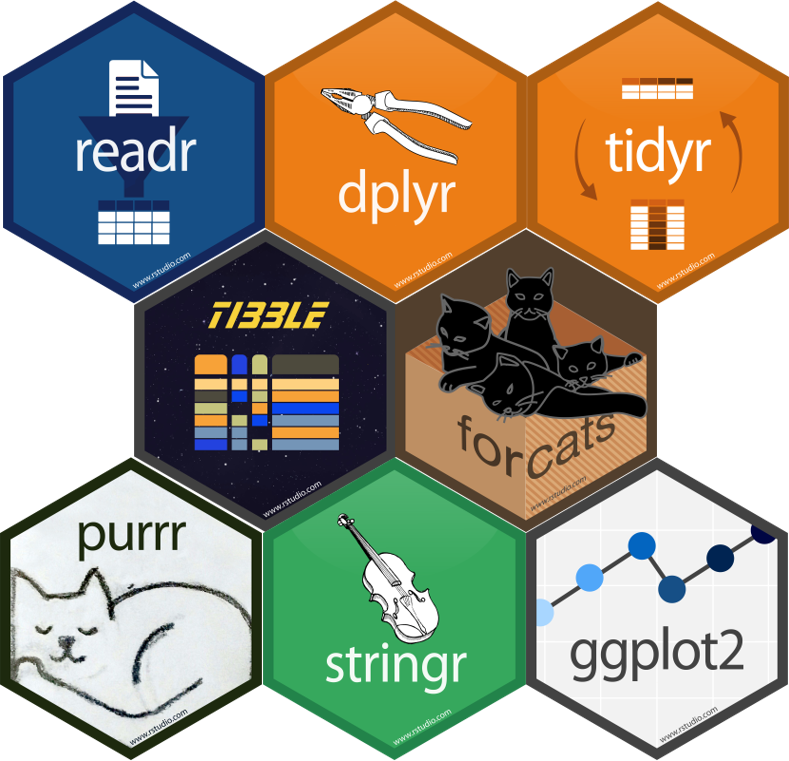
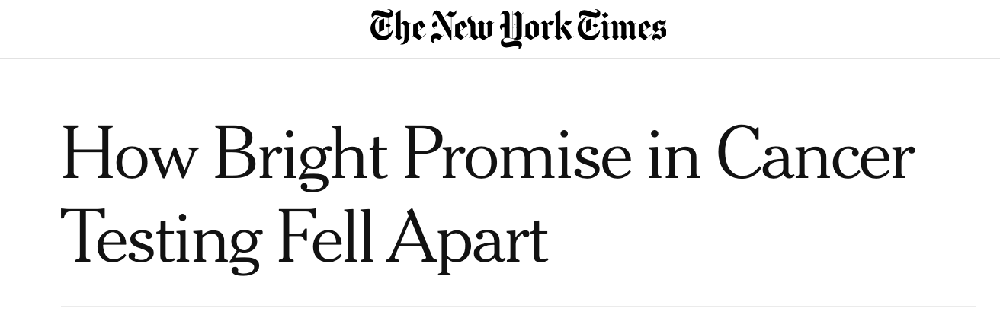
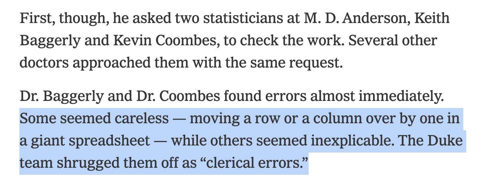
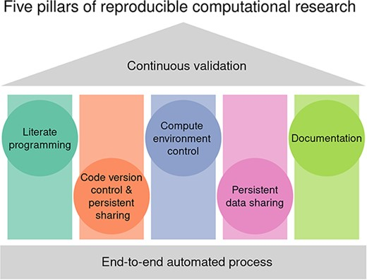
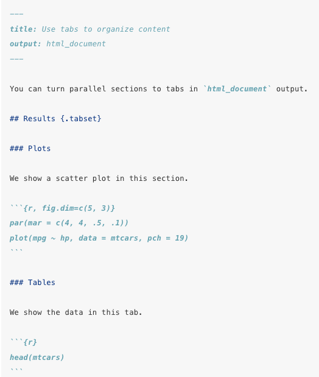
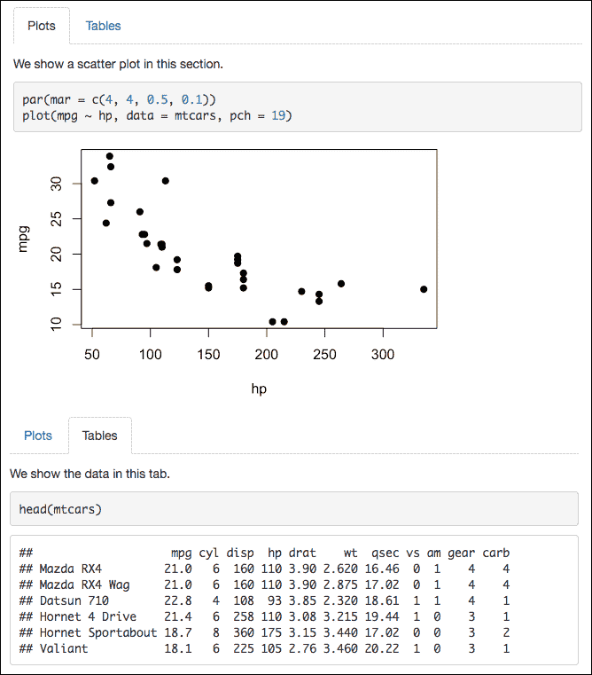
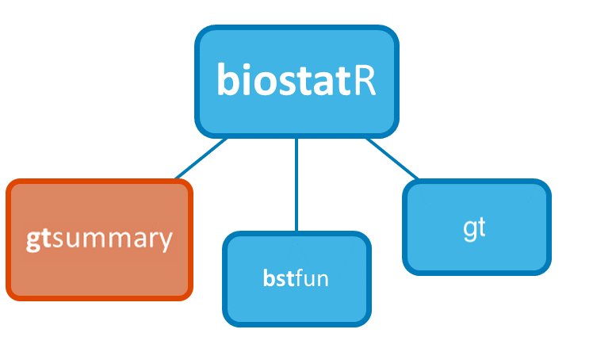
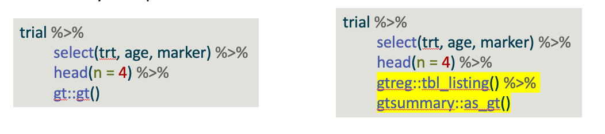
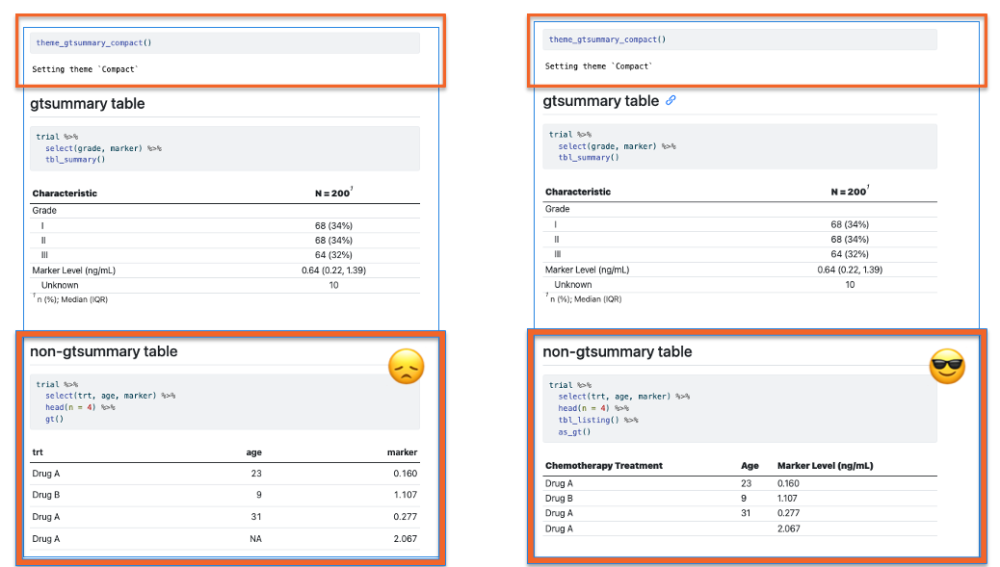

Reproducible Analyses & Literate Programming
Karissa Whiting
Research Biostatistician Training Series
Memorial Sloan Kettering
March 11th, 2025

What is Reproducibility?
A data analysis is reproducible if all the information (data, files, etc.) needed to compute results is available for someone else to re-do your entire analysis and get the same results.
All data processing steps from
raw datatocleaned dataare available and documentedAll analysis decisions made are documented and available in code
Results don’t depend on your specific computational environment (e.g. no hard coded file paths, seeds set for stochastic computations)
Why is Reproducibility Important?
Allows you to show evidence of your results
Encourages transparency about decisions made during analysis
Enables others to check and use/extend your methods and results
Enables FUTURE YOU to check and use/extend your methods and results
- “You mostly collaborate with yourself, and me-from-two-months-ago never responds to email”
-
Dr. Mark Holder, Computational Biologist
Why is Reproducibility Important?
Dangers of writing code that is hard to double-check or confirm:


Updated NIH Guidelines
NIH Data Management & Sharing Policy Updates
- Effective Date: January 25, 2023
- Purpose: Enhance data sharing to advance research transparency & reproducibility
Key Requirements:
- As of 1/2023, all NIH Grants must create and adhere to a Data Management Plan (DMP)
- This plan will likely requires sharing of research data, and in some cases, code.
- You may be asked to provide your cleaned analysis data (and possibly code) at time of publication or end of grant.
Five Pillars Of Reproducibility

How Do We Ensure Our Code is Reproducible?
Compute Environment Control
- Virtual environments, avoid absolute file paths (e.g.
~/Users/Whiting/Projects...)
- Virtual environments, avoid absolute file paths (e.g.
Code Version Control
- Document changes you make, or use git/Github
Documentation
- Comment and document your code
- Invest in a good
README.md
Data Integrity - more details later
Literate Programming
- Have a clear project structure, avoid ‘by hand’ steps
Literate Programming
Avoid ‘by hand’ steps used in the analysis
Don’t clean by hand in Excel. All analysis steps should be done in code and saved in well-documented scripts.
If any ‘non-scriptable’ steps are unavoidable, document those steps very clearly
DNR (Do Not Repeat) - if you do it more than 3 times, consider writing a function
Use reproducible reporting practices for analyses (e.g. Rmd, quarto, Jupyter notebook, inline text stats)
Reproducible Reporting
Reproducible Reporting
R Markdown, Quarto and Jupyter are tools for integrating code and narrative text into a single executable document
Can be rendered into various output formats (HTML, PDF, Word, and slides)
Detailed code and data analysis steps are included in one document, encouraging transparency and providing a complete record of the research process
Documents automatically update when data or code changes, reducing errors and maintaining consistency.
Version-control compatible
Quarto Features: Callouts and Comments
Sometimes you need to draw attention to something in your report. You can do this using {.callout-note}
::: {.callout-note}
Note that there are five types of callouts, including:
`note`, `warning`, `important`, `tip`, and `caution`.
:::Note
Note that there are five types of callouts, including: note, warning, important, tip, and caution.
::: {.callout-warning}
Here is an example of a warning
:::Warning
Here is an example of a warning
Quarto Features: Tabs


What Goes In Your Report?
gtsummary
{gtsummary} - Tools to create publication-ready analytical and summary tables using the R programming language.
Summarizes data sets, regression models, and more, using sensible defaults with highly customizable capabilities.

{gtsummary} overview
- Create tabular summaries including:
- “Table 1”
- Cross-tabulation
- Regression models summaries
- Survival data summaries
- Report statistics from {gtsummary} tables inline in R Markdown
- Stack or merge any table type
- Use themes to standardize across tables
- Choose from different print engines
Basic tbl_summary()
| Characteristic | N = 2001 |
|---|---|
| Age | 47 (38, 57) |
| Unknown | 11 |
| Grade | |
| I | 68 (34%) |
| II | 68 (34%) |
| III | 64 (32%) |
| Tumor Response | 61 (32%) |
| Unknown | 7 |
| 1 Median (Q1, Q3); n (%) | |
Four types of summaries:
continuous,continuous2,categorical, anddichotomousVariables coded
0/1,TRUE/FALSE,Yes/Notreated as dichotomousStatistics are
median (IQR)for continuous,n (%)for categorical/dichotomousLists
NAvalues under “Unknown”Label attributes are printed automatically
Survival outcomes with tbl_survfit()
library(survival)
fit <- survfit(Surv(ttdeath, death) ~ trt, trial)
tbl_survfit(
fit,
times = c(12, 24),
label_header = "**{time} Month**"
) %>%
add_p()| Characteristic | 12 Month | 24 Month | p-value1 |
|---|---|---|---|
| Chemotherapy Treatment | 0.2 | ||
| Drug A | 91% (85%, 97%) | 47% (38%, 58%) | |
| Drug B | 86% (80%, 93%) | 41% (33%, 52%) | |
| 1 Log-rank test | |||
- Also, regression (and more) models with
tbl_regression()andtbl_uvregression()
{gtsummary} + formulas

Customize Using Add-on Functions
Summary tables can be further updated using helper functions:
add_*() add additional column of statistics or information, e.g. p-values, q-values, overall statistics, treatment differences, N obs., and more
modify_*() modify table headers, spanning headers, footnotes, and more
bold_()/italicize_() style labels, variable levels, significant p-values
Advanced Tips: Update tbl_summary() with modify_*()
| Characteristic |
Drug
|
|
|---|---|---|
| Group A1 | Group B1 | |
| Age | 46 (37, 60) | 48 (39, 56) |
| Grade | ||
| I | 35 (36%) | 33 (32%) |
| II | 32 (33%) | 36 (35%) |
| III | 31 (32%) | 33 (32%) |
| Tumor Response | 28 (29%) | 33 (34%) |
| 1 median (IQR) for continuous; n (%) for categorical | ||
- Use
show_header_names()to see the internal header names available for use inmodify_header()
Advanced Tips: continuous2 & digits
| Characteristic | Drug A N = 981 |
Drug B N = 1021 |
|---|---|---|
| Age | ||
| Mean (SD) | 47.0 (14.7) | 47.4 (14.0) |
| Min, Max | 6.0, 78.0 | 9.0, 83.0 |
| Unknown | 7 | 4 |
| Pathologic tumor grade | ||
| I | 35 (36%) | 33 (32%) |
| II | 32 (33%) | 36 (35%) |
| III | 31 (32%) | 33 (32%) |
| Tumor Response | 28 / 95 (29%) | 33 / 98 (34%) |
| Unknown | 3 | 4 |
| 1 n (%); n / N (%) | ||
type: specifies the summary type ascontinuous2digits: specify the number of decimal places for rounding
Advanced Tips: tbl_continuous()
Summarize a continuous variable within categories and across different strata.
| Characteristic | Drug A N = 981 |
Drug B N = 1021 |
|---|---|---|
| Grade | ||
| I | 46 (36, 60) | 48 (42, 55) |
| II | 45 (31, 55) | 51 (42, 58) |
| III | 52 (42, 61) | 45 (36, 52) |
| Tumor Response | ||
| 0 | 46 (36, 60) | 47 (37, 54) |
| 1 | 48 (41, 61) | 49 (43, 59) |
| 1 Age: Median (Q1, Q3) | ||
Advanced Tips: Custom p-value functions
- Many tests available by default: https://www.danieldsjoberg.com/gtsummary/reference/tests.html
- If you need one not on the list, create a custom function (use broom tidy at the end)
# define function (need to use these arguments)
calculate_prop_test <- function(data, variable, by, ...) {
data <- tidyr::drop_na(data, dplyr::all_of(c(variable, by)))
prop.trend.test(
x = table(data[[variable]], data[[by]])[2, ], # get the second row (the positive row)
n = table(data[[by]])) |>
broom::tidy()
}
trial[c("grade", "trt")] %>%
tbl_summary(by = trt) %>%
add_p(test = grade ~ "calculate_prop_test")| Characteristic | Drug A N = 981 |
Drug B N = 1021 |
p-value2 |
|---|---|---|---|
| Grade | 0.7 | ||
| I | 35 (36%) | 33 (32%) | |
| II | 32 (33%) | 36 (35%) | |
| III | 31 (32%) | 33 (32%) | |
| 1 n (%) | |||
| 2 Chi-squared Test for Trend in Proportions | |||
Advanced Tips: tbl_uvregression() with formula
formulaargument is powerful! You can adjust for variables, or pass mixed model formats (e.g."{y} ~ {x} + (1 | gear)")Additionally,
add_global_p()can be useful
| Characteristic | N | OR1 | 95% CI1 | p-value |
|---|---|---|---|---|
| Chemotherapy Treatment | 183 | 0.7 | ||
| Drug A | — | — | ||
| Drug B | 1.13 | 0.60, 2.13 | ||
| Grade | 183 | 0.9 | ||
| I | — | — | ||
| II | 0.85 | 0.39, 1.85 | ||
| III | 1.01 | 0.47, 2.16 | ||
| 1 OR = Odds Ratio, CI = Confidence Interval | ||||
Advanced Tip: tbl_merge()
Often it’s useful to put summary stats and model estimates side by side
t3 <- trial[c("age", "grade", "response")] %>%
tbl_summary(missing = "no") %>%
add_n() %>%
modify_header(stat_0 ~ "**Summary Statistics**")
t4 <- tbl_uvregression(
trial[c("ttdeath", "death", "age", "grade", "response")],
method = coxph,
y = Surv(ttdeath, death),
exponentiate = TRUE,
hide_n = TRUE)
tbl_merge(tbls = list(t3, t4)) %>%
modify_spanning_header(everything() ~ NA_character_)| Characteristic | N | Summary Statistics1 | HR2 | 95% CI2 | p-value |
|---|---|---|---|---|---|
| Age | 189 | 47 (38, 57) | 1.01 | 0.99, 1.02 | 0.3 |
| Grade | 200 | ||||
| I | 68 (34%) | — | — | ||
| II | 68 (34%) | 1.28 | 0.80, 2.05 | 0.3 | |
| III | 64 (32%) | 1.69 | 1.07, 2.66 | 0.024 | |
| Tumor Response | 193 | 61 (32%) | 0.50 | 0.31, 0.78 | 0.003 |
| 1 Median (Q1, Q3); n (%) | |||||
| 2 HR = Hazard Ratio, CI = Confidence Interval | |||||
Advanced Tip: gtsummary Themes
Themes control many aspects of how a table is printed. Function defaults can be controlled with themes, as well as other aspects that are not modifiable with function arguments.
The {gtsummary} package comes with a few themes, and we welcome user-contributed themes as well!
Most commonly used theme:
gtsummary::theme_gtsummary_compact()More info: https://www.danieldsjoberg.com/gtsummary/articles/themes.html
Other Useful Functions
tbl_listing()
Problem: You <3 {gtsummary} themes, but you have a non-{gtsummary} table included your analysis report and it doesn’t match your beautiful {gtsummary} tables.
Solution: tbl_listing() from the {gtreg} package turns any table into a {gtsummary} class table. Now {gtsummary} themes can be applied to any table in your report.
Other Useful Functions
gtreg::tbl_listing()
Other Customizations
Many more customization available!
See the documentation at http://www.danieldsjoberg.com/gtsummary/reference/index.html
And a detailed tbl_summary() vignette at http://www.danieldsjoberg.com/gtsummary/articles/tbl_summary.html
Report Reproducbile Statistics with gtsummary::inline_text()
Tables are important, but we often need to report results in-line in a report.
Any statistic reported in a {gtsummary} table can be extracted and reported in-line in an R Markdown document with the
inline_text()function.The pattern of what is reported can be modified with the
pattern =argument.Default is
pattern = "{estimate} ({conf.level*100}% CI {conf.low}, {conf.high}; {p.value})"
Report Reproducbile Statistics with gtsummary::inline_text()
| Characteristic | N | OR1 | 95% CI1 | p-value |
|---|---|---|---|---|
| Chemotherapy Treatment | 193 | |||
| Drug A | — | — | ||
| Drug B | 1.21 | 0.66, 2.24 | 0.5 | |
| Age | 183 | 1.02 | 1.00, 1.04 | 0.10 |
| Grade | 193 | |||
| I | — | — | ||
| II | 0.95 | 0.45, 2.00 | 0.9 | |
| III | 1.10 | 0.52, 2.29 | 0.8 | |
| 1 OR = Odds Ratio, CI = Confidence Interval | ||||
In Code: The odds ratio for age is ‘inline_text(tbl_uvreg, variable = age)’
In Report: The odds ratio for age is 1.02 (95% CI 1.00, 1.04; p=0.10)
{bstfun}
A shared space for department members to add functions that may be useful to others
Houses individual member’s project templates and function to start projects (
create_bst_project(): will be discussed in further training)Diverse functions for various analysis-related tasks, {bstfun} Reference Index: https://mskcc-epi-bio.github.io/bstfun/
{bstfun} Useful Functions
clean_mrn()
MRNs follows specific formatting rules:
Must be character
Must contain only numeric components
Must be eight characters long and include leading zeros.
This function converts numeric MRNs to character and ensures it follows MRN conventions. Character MRNs can also be passed, and leading zeros will be appended and checked for consistency.
[1] “00000100” “00000100” “00000100”
{bstfun} Useful Functions
use_varnames_as_labels()
Automatically add labels to your data based on column names
Before:
| Characteristic | N = 321 |
|---|---|
| mpg | 19.2 (15.4, 22.8) |
| cyl | |
| 4 | 11 (34%) |
| 6 | 7 (22%) |
| 8 | 14 (44%) |
| vs | 14 (44%) |
| am | 13 (41%) |
| 1 Median (Q1, Q3); n (%) | |
{lubridate}
- We work with a LOT of dates
- {lubridate} helps parse dates from strings, and improves functional operations on date-times
- Data cleaning training will cover this in more depth or see R for Data Science: https://r4ds.had.co.nz/dates-and-times.html
[1] 10
[1] Mon Levels: Sun < Mon < Tue < Wed < Thu < Fri < Sat
[1] Fri Levels: Sun < Mon < Tue < Wed < Thu < Fri < Sat
Five Pillars Of Reproducibility
Data Versioning
How data versions are managed is still highly depending on what service and data types you work with
For genomic or imaging data, try to use a standardized pipeline
For clinical data, try to establish a workflow with your service collaborators.
Avoid making changes to excel yourself
Use the
READMEto track
Thank You!!!
Questions?
Resources
- {biostaR} - https://github.mskcc.org/pages/datadojo/biostatR/index.html
- {gtsummary} - https://www.danieldsjoberg.com/gtsummary/
- {bstfun} - https://www.danieldsjoberg.com/bstfun/index.html
- Departmental Resource Guide - https://rconnect.mskcc.org/resource-guide/
- Quarto Docs - https://quarto.org/docs/guide/
- Quarto Blog Post by Alison Hill - https://www.apreshill.com/blog/2022-04-we-dont-talk-about-quarto/